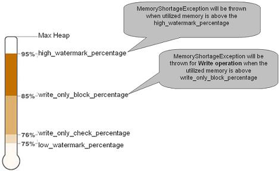

When running in ALL_IN_CACHE cache policy mode, the space uses only the available physical memory. When running in a persistent space mode and having Space Persistency defined, the space data is backed with the underlying database, but the overall capacity of the space does not exceed the capacity of the available physical memory.
When using All IN CACHE, the cache size parameter is ignored.
The org.openspaces.core.SpaceMemoryShortageException (which wraps the com.j_spaces.core.MemoryShortageException) is thrown when:
space-config.engine.memory_usage.high_watermark_percentage threshold.space-config.engine.memory_usage.write_only_block_percentage threshold and a write-type operation has been called.
The org.openspaces.core.SpaceMemoryShortageException or com.j_spaces.core.MemoryShortageException includes information about:
Here is an example of the org.openspaces.core.SpaceMemoryShortageException message:
org.openspaces.core.SpaceMemoryShortageException at: host: MachineHostName, container: mySpace_container1_1, space mySpace,
total memory: 1820 mb, used memory: 1283 mb
Getting SpaceMemoryShortageException when running in ALL-IN_CACHE policy mode points that the heap size allocated for the JVM is too low, or the garbage collection settings are not tuned correctly. You should consider increasing the JVM heap size or move into more advanced garbage collector such as CMS or iCMS. Here is an example for CMS garbage collector settings you may use:
-server -Xms8g -Xmx8g -Xmn300m -XX:+UseConcMarkSweepGC -XX:+UseParNewGC
-XX:CMSInitiatingOccupancyFraction=60 -XX:+UseCMSInitiatingOccupancyOnly
-XX:MaxPermSize=256m -XX:+ExplicitGCInvokesConcurrent -XX:+UseCompressedOops
When running with large heap size you should tune the memory manager settings. This will avoid throwing SpaceMemoryShortageException too early. See the Handling Large JVM Heap Size section for details.